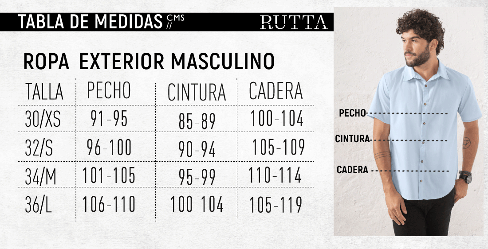
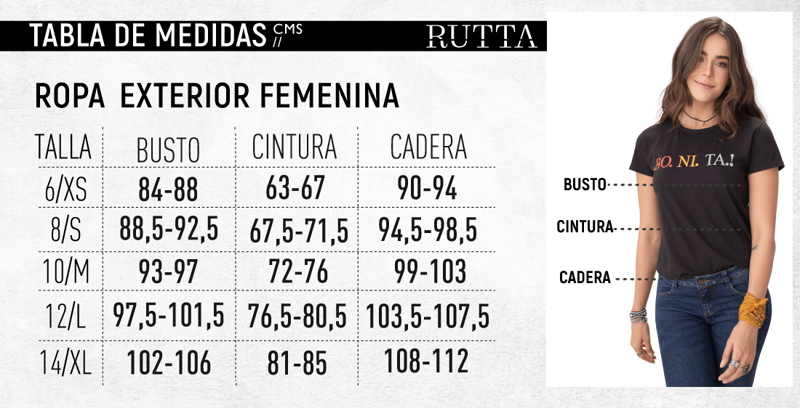

Guia de Medidas
Medidas Camisetas


Medidas Gorras
1. Consigue una cita métrica o, en última instancia, utiliza un pedazo de hilo y una regla.
2. Busca el punto más ancho de tu cabeza para medir la circunferencia.En la parte de atrás lo encontrarás sintiendo la curvatura natural de la cabeza, y en la parte delantera será por encima de tus cejas.
3. Anota la medida obtenida con la cinta o hilo. Te recomendamos colocar la cinta donde te gustaría la gorra, dependiendo de tu estilo
4. Ahora que ya conoces todos los secretos de las formas y tallas de las gorras Colombia Prints, lo único que tienes que hacer es elegir entre nuestra selección de los estilos más de moda en nuestra tienda Colombia Prints